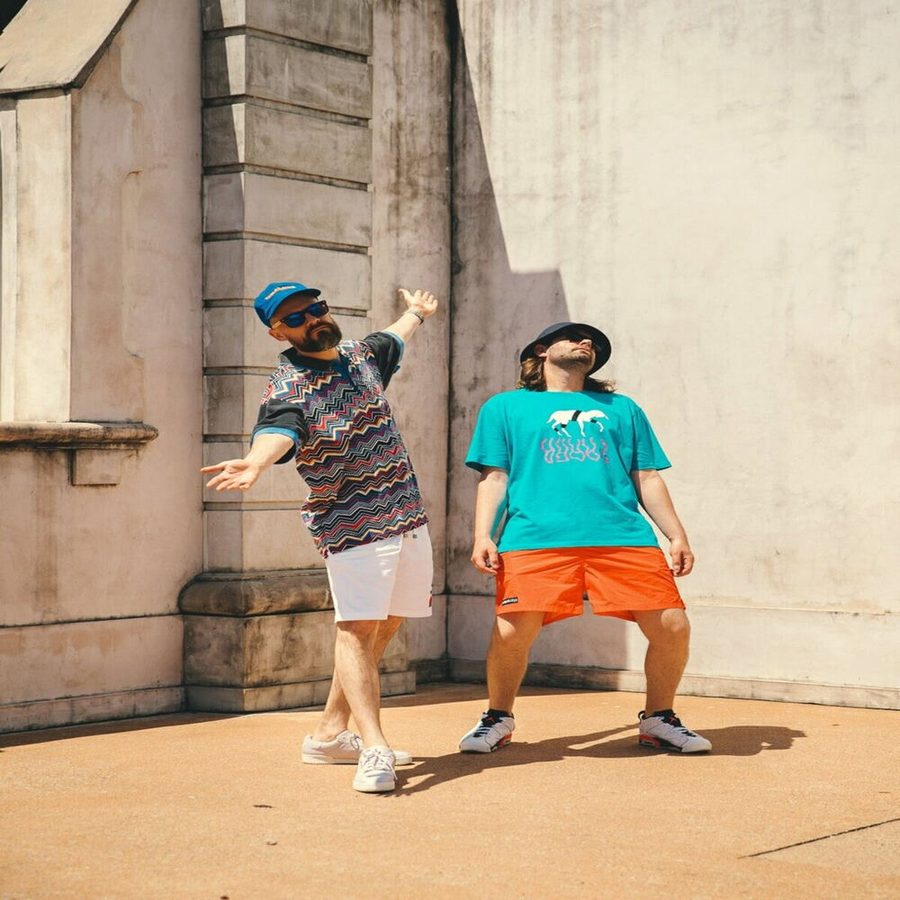

Hermitude: Taking the hip-hop high ground


Hermitude is the duo of Luke Dubs and Elgusto, part of the renowned Elefant Traks stable and already a legendary name in Aussie underground hip hop. Two albums down and they’d nailed their own downtempo sound in their Blue Mountains lair, before relocating to Sydney in an attempt to widen their horizons even further. Their acclaimed new album Threads is the result. While their first two albums were straightforward instrumental hip hop in the sense that they were sample based, “we used a lot more live instruments rather than taking samples,” Elgusto told ITM. “We wanted a new challenge in terms of coming up with the samples ourselves.”
It’s this progressive approach to hip hop that has defined the work of Hermitude from day one. They’ve spoken out before on a trend they’ve identified in Aussie hip hop that has seen artists compelled to comply to a formula in order to get airplay on national radio, but Hermitude are determined to fly in the face of that. They’re taking the hip-hop high ground, if you will. “Trying to get an instrumental track played on national radio is harder for us, because there’s not that big vocal hook that seems to be popping up in a lot of Aussie hip hop these days… But it’s happening a lot more now and people are aware of that, hopefully a lot more acts are gonna start trying to change it up a little bit, rather than falling in line. That’s how things start moving anyway.”
It appears it’s an approach that delivers results for Hermitude. According to the ITM review, “It’s one of those rare albums with no tracks that you want to skip past… yet another example of Elefant Traks coming through with the goods. Threads is almost certain to feature in top ten albums of 2008 lists.” ITM’s Angus Paterson talks to Elgusto from Hermitude about taking the hip-hop high ground.
Hermitude’s Threads is out now on Elefant Traks through Inertia. Check ‘em out if you’re in Sydney this weekend, the Garden Music event taking place at Government House this Sunday 19th October.